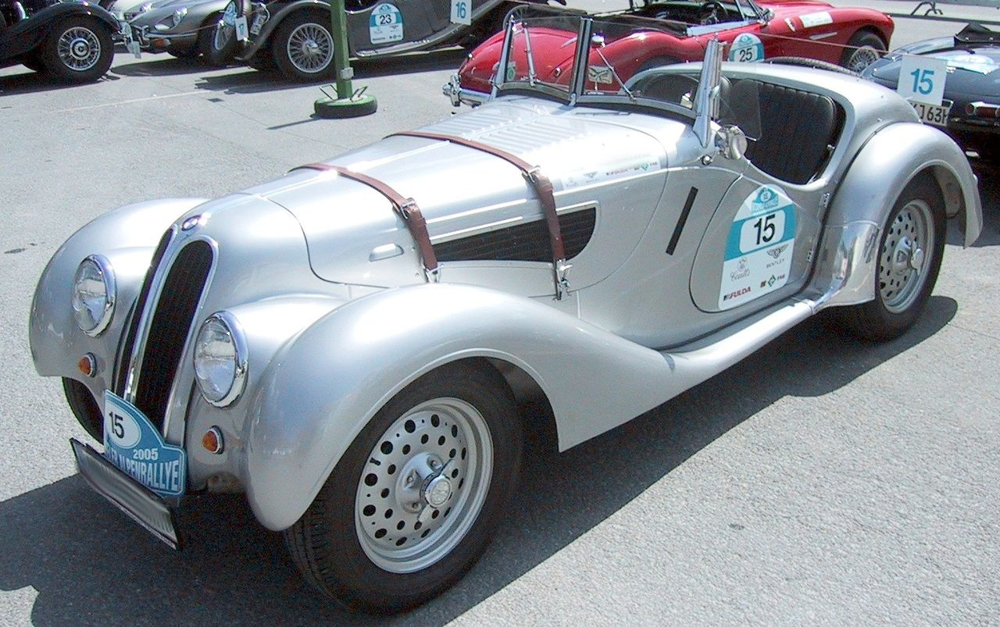

Inaintea celui de-al doilea razboi mondial
Precursor al firmei BMW, au fost in 1913 fondata de Karl Rapp, firma „Rapp Motorenwerke GmbH”. Fiind initial o uzina de fabricare de motoare. In tanara firma, inginerul Max Fritz a inventat in 1917 motorul de avion cu supracomprimare, motor care putea sa urce la inaltimi mai mari.
Constructia motorului fiind foarte buna, compania a semnat un contract cu armata Regatului Prusiei pentru construirea a 2.000 de motoare de tip V12 asigurandu-si astfel viitoarea dezvoltare. Comanda a presupus finantarea suplimentara, care a fost asigurata prin asocierea lui Rapp cu Camillo Castiglioni si Max Friz.
Cu toate ca la sfarsitul primului razboi mondial si a Tratatului de la Versailles, cand se parea ca a venit sfarsitul companiei BMW (motorul fiind singurul produs), pentru ca Germaniei i-a fost interzis cinci ani sa mai produca motoare de avioane, la data de 17 iunie 1919 s-a inregistrat cu un BMW IIIa, in secret, o inaltime de 9.760 de metri, atunci record mondial.
In 1922 principalul actionar Camillo Castiglioni a parasit firma, a luat dreptul numelui BMW si s-a dus la firma bavareza de aeronave: „Bayerische Flugzeug-Werke” (BFW).
Bayerische Flugzeug-Werke a rezultat din Gustav-Otto-Flugzeugwerk, infiintate la data de 7 martie 1916, de Gustav Otto, un fiu a lui Nikolaus Otto, inventatorul Motorului-Otto. Localizarea uzinei in cartierul Milbertshofen a fost aleasa pentru ca era aproape de Gustav-Otto-Flugzeugwerk. De aici rezulta si data infiintarii uzinei BMW pe data de 7 martie 1916.
Dupa ce Tratatul de la Versailles a interzis producerea de avioane in Germania, Gustav Otto si-a inchis fabrica de avioane, iar BMW a trecut la productia de materiale rulante pentru cai ferate, specializandu-se in productia de frane.
In 1928, BMW a achizitionat fabrica de masini Farzeugfabrik Eisenach AG, un producator Dixi, şi aşa a devenit producator de automobile. La 22 martie 1929, BMW produce primul autoturism in serie. Modelul BMW 3/15 DA 2 care au fost o licenţa de British Austin Seven.
Cu noul model 326 (1935), 327 (1937) şi in 1936 prezentatul sport Roadster 328 au aparut modele atractive.

BMW 328